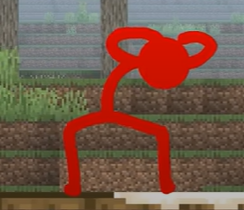

| Name |
Description |
Abilities/Skills |
Image |
| The Chosen One |
The Chosen one is a powerful black stickfigure who was made
by his creator, Alan Becker, as an animation test. However, he came alive and starts to rebel against
his creator and goes beyond that by causing havoc around the entire web. A few years went by and he started to realize that hurting the internet was not really worth it to him anymore. |
Fire rockets,Thunderbolts,Laser eyes,Fire balls,Hurricane |
 |
| The Dark Lord |
The Dark Lord is the friend and enemy of the Chosen One. He was originally programmed by Alan to destroy the Chosen One but the Chosen
persuaded to help defeat his creator. The Dark Lord then procceds to create a virus that will destroy anything it touches around the web. He tries to convince the Chosen One to join him but he refuses and instead the Chosen One decides to fight him since he did not want him to release havoc like him |
Fire Rockets, Fireballs, Virabots, Virablades, Viraneddles |
 |
| The Second Coming |
The Second Coming is similar to the Chosen One, however he insteads tries to help
his creator Alan, help animate for him. He likes to do karate with his firends during his free time, howevr he gets extremely
powerful and destructive towards his enemies if they ever try to hurt his friends. |
Green Fire Rockets, Green lazer eyes, able to draw things into life, regeneration |
 |
| Red |
Red is one of the Second Comings friends and he is probably the yougest and average fighter of the group. He is sometimes
an impulsive stickfigure whenever playing Minecraft with the others. Like he tries to put a lucky block on his firned staff
which made the orb of the lucky block angry and starts to attack him and the other. |
Combat, spawning minecraft mobs(animals), |
 |
| Yellow |
Yellow is the smart one in the friend group of The Second Coming. He usually likes
to play with redstone in Minecraft to try the different technological advancements it had to offer. |
Combat, Redstone(minecraft) |
|
| Blue |
Blue is somewhat a more experience fighter like red and he is one of the friends of The
Second Coming. In Minecraft, he likes to cook for his friends and loves to farm food. He even enjoys eating netherwarts, which are one of
the main ingridients in making potions in minecraft, He is also familiar in making Minecraft potions and know how to make custom ones. |
combat, farming, potion making |
|
| Green |
Green is the friend that the Second Coming spends most time with since their very close and the one he alwyas by his side.
Whenever it come to playing Minecraft his friends, He likes to build amazing structures like a robot and he would always win everytime him and his friends are in a build battle. He even like to fiddle around Minecraft's noteblock, which are the only blocks in the game that can produce music. He is also friends with another stickman named purple. |
combat, music, building |
|